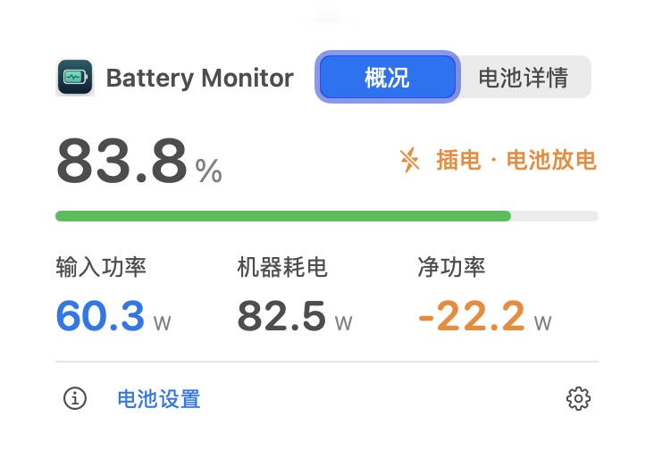
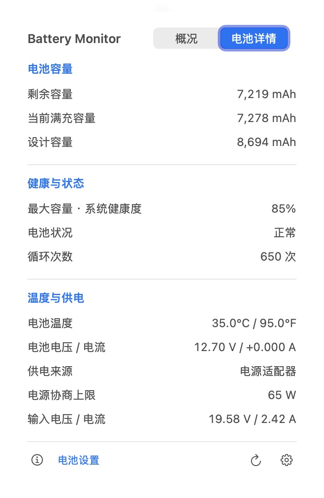

Mac 菜单栏电池监测
Mac 的用电，一眼看清。
在菜单栏看电量或功率。点开电池图标，就能看到电源输入、整机耗电和电池的充放电状态。
看懂功率读数适用于 MacBook · macOS 13 及以上

功率读数
插着电也会放电？
输入功率是电源送到 Mac 接口的直流功率。机器耗电超过输入时，电池就会补上差额。
- 输入功率
- 52.7W
- 机器耗电
- 52.9W
- 净功率
- −0.2W

电池详情
除了电量，还能看什么？
- 容量与健康
- 对照当前满充容量、设计容量和 macOS 报告的最大容量。
- 循环与温度
- 查看累计充电循环次数，以及电池当前的温度。
- 供电与充电
- 查看正在使用的电源、协商功率上限，以及可用的电压和电流读数。
读数取决于机型和系统。≈ 表示估算值，— 表示该项数据暂不可用。
电池数据留在你的 Mac 上。
无需账号，应用在本机读取并显示电池与功率数据。